使用小程序
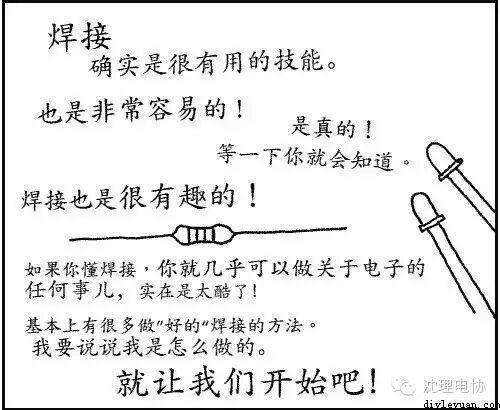
确实是很有用的技能。
也是非常容易的！
是真的！
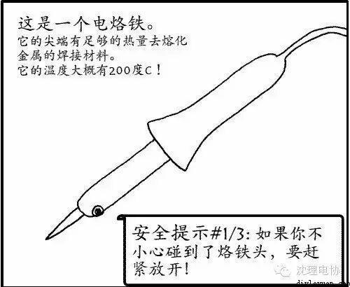
这是一个电烙铁。
它的尖端有足够的热量去熔化
金属的焊接材料。
它的温度大概有200度C！
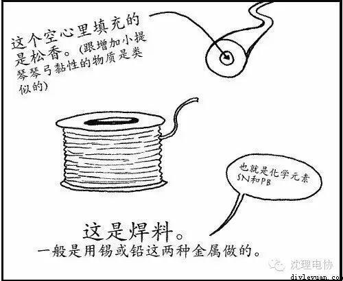
这是焊料。
一般是用锡或铅这两种金属做的。
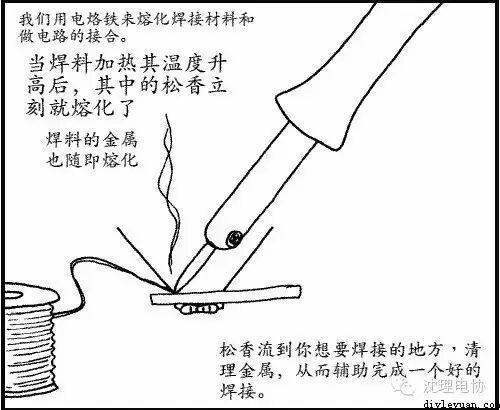
我们用电烙铁来熔化焊接材料和做电路的接合。
当焊料加热其温度升高后，其中的松香立刻就熔化了
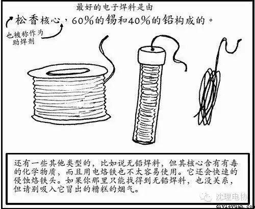
最好的电子焊料是由松香为心，60％的锡和40％的铅构成的
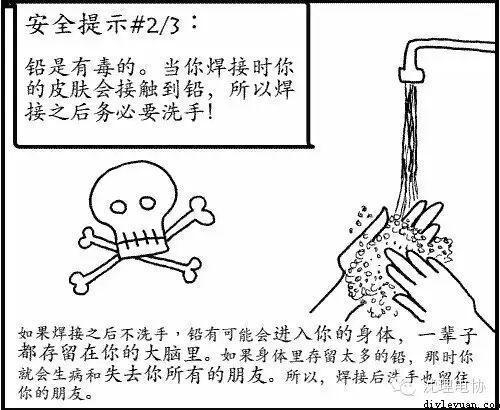
铅是有毒的。当你焊接时你的皮肤会接触到铅，所以焊接之后务必要洗手！
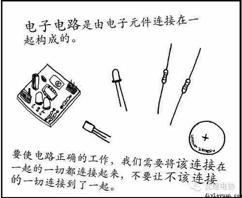
电子电路是由电子元件连接在一起构成的。
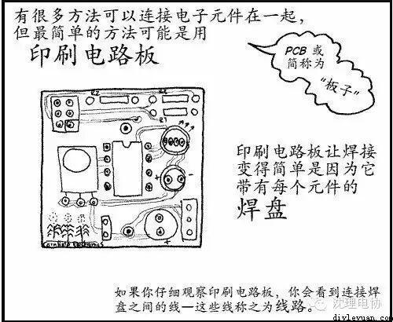
印刷电路板让焊接变得简单是因为它带有每个元件的焊盘
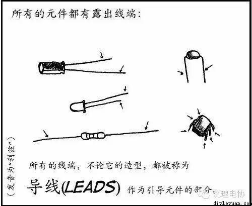
所有的元件都有露出线端
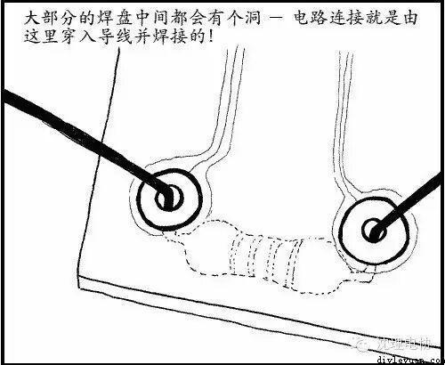
大部分的焊盘中间都会有个洞 － 电路连接就是由这里穿入导线并焊接的！
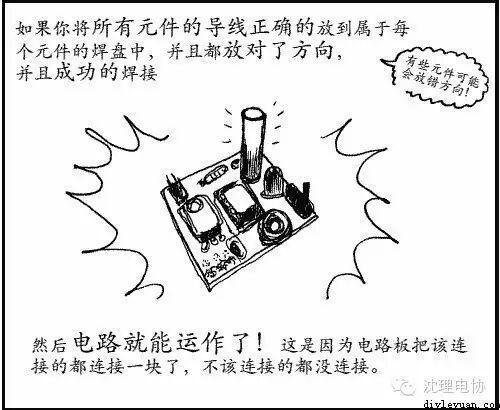
如果你将所有元件的导线正确的放到属于每个元件的焊盘中，并且都放对了方向，并且成功的焊接
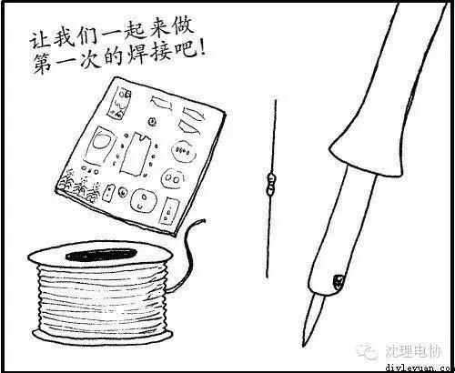
让我们一起来做第一次的焊接吧！
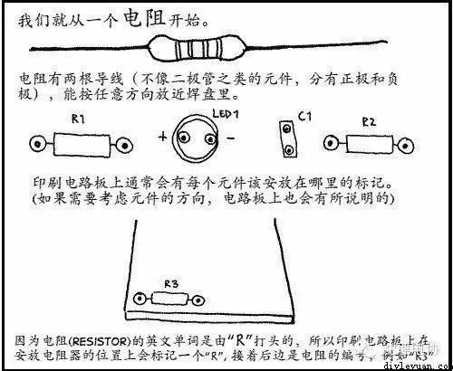
我们就从一个电阻开始学习焊接。
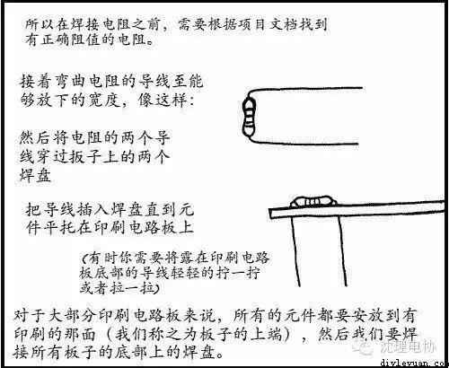
对于大部分印刷电路板来说，所有的元件都要安放到有印刷的那面（我们称之为板子的上端），然后我们要焊接所有板子的底部上的焊盘。
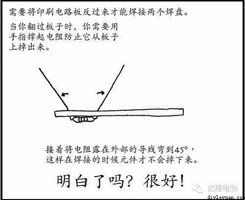
需要将印刷电路板反过来才能焊接两个焊盘。
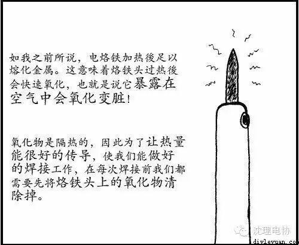
如我之前所说，电烙铁加热後足以熔化金属。这意味着烙铁头过热後会快速氧化，也就是说它暴露在空气中会氧化变脏！氧化物是隔热的，因此为了让热量能很好的传导，使我们能做好的焊接工作，在每次焊接前我们都需要先将烙铁头上的氧化物清除掉。
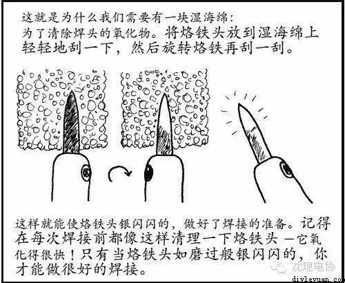
记得在每次焊接前都像这样清理一下烙铁头 －它氧化得很快！只有当烙铁头如磨过般银闪闪的，你才能做很好的焊接。
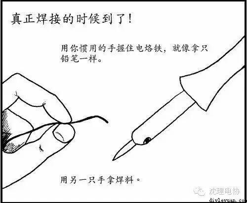
用你惯用的手握住电烙铁，就像拿只铅笔一样。
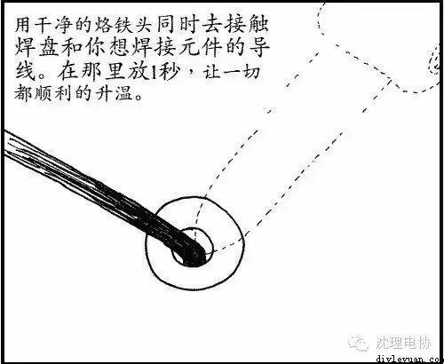
用干净的烙铁头同时去接触焊盘和你想焊接元件的导线。在那里放1秒，让一切都顺利的升温。
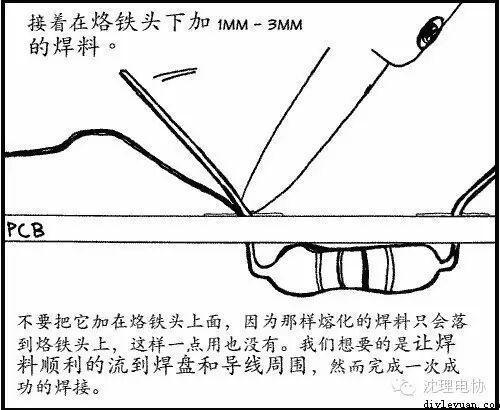
接着在烙铁头下加 1mm -3mm的焊料。
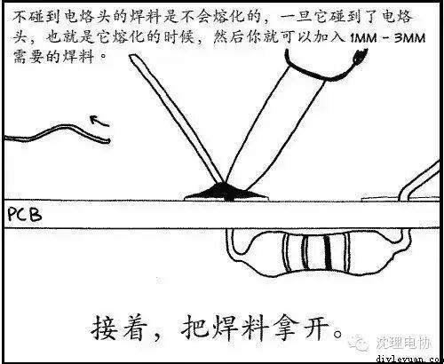
不碰到电烙头的焊料是不会熔化的，一旦它碰到了电烙头，也就是它熔化的时候，然后你就可以加入 1mm - 3mm需要的焊料。
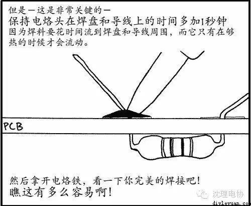
保持电烙头在焊盘和导线上的时间多加1秒钟
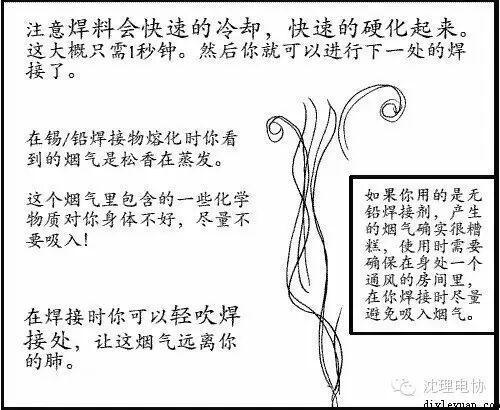
注意焊料会快速的冷却，快速的硬化起来。这大概只需1秒钟。然后你就可以进行下一处的焊接了。
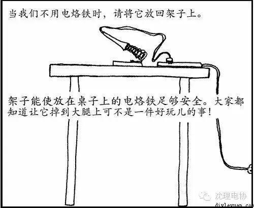
当我们不用电烙铁时，请将它放回架子上。
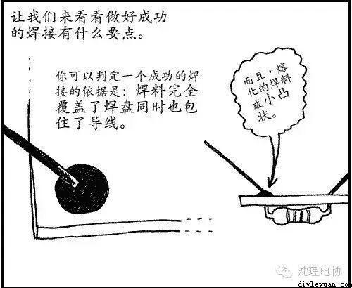
让我们来看看做好成功的焊接有什么要点
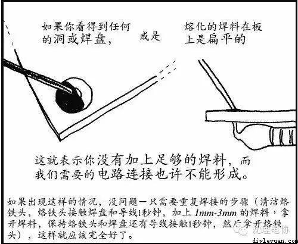
没有加上足够的焊料
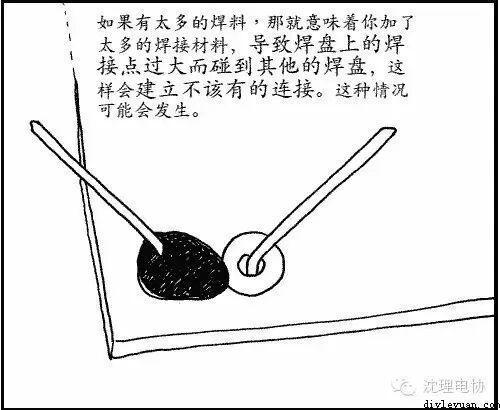
太多的焊料
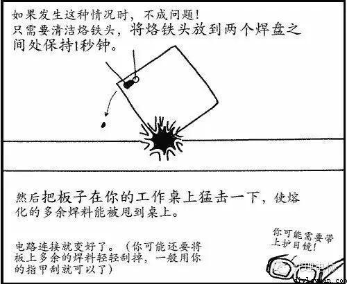
两个焊点连接在一起了
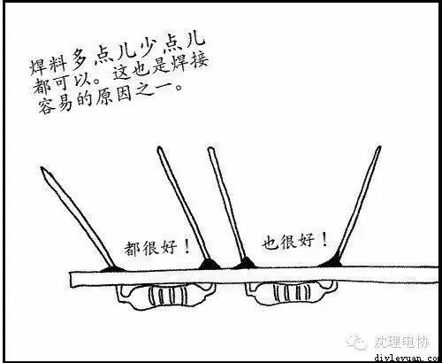
焊料多点儿少点儿都可以。
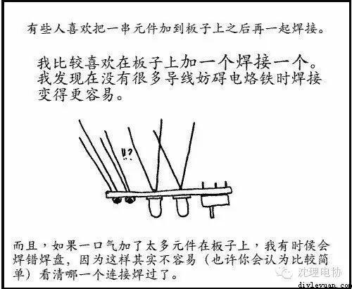
我比较喜欢在板子上加一个焊接一个。我发现在没有很多导线妨碍电烙铁时焊接变得更容易。
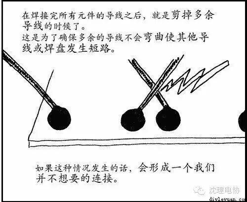
在焊接完所有元件的导线之后，就是剪掉多余导线的时候了。
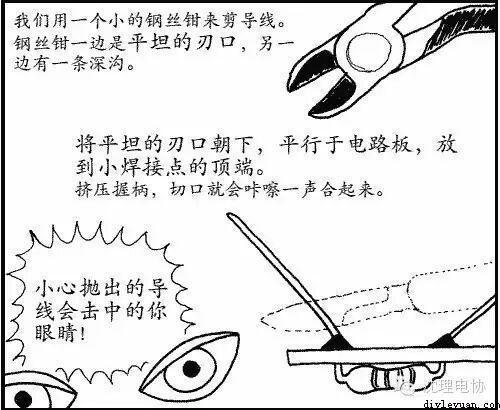
我们用一个小的钢丝钳来剪导线。
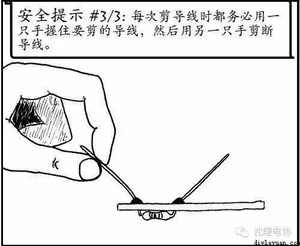
每次剪导线时都务必用一只手握住要剪的导线，然后用另一只手剪断导线。
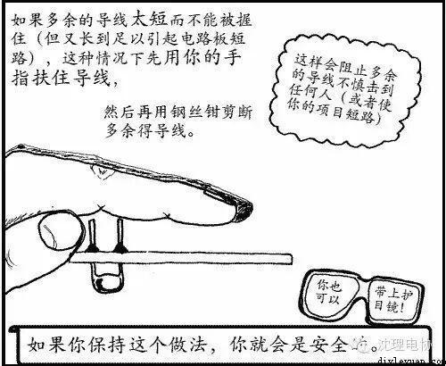
如果多余的导线太短而不能被握住（但又长到足以引起电路板短路），这种情况下先用你的手指扶住导线，然后再用钢丝钳剪断多余得导线。这样会阻止多余的导线不慎击到任何人（或者使你的项目短路）
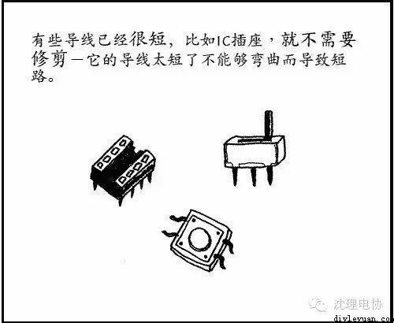
有些导线已经很短，比如IC插座，就不需要修剪－它的导线太短了不能够弯曲而导致短路。
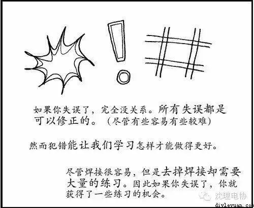
尽管焊接很容易，但是去掉焊接却需要大量的练习。因此如果你失误了，你就获得了一些练习的机会。
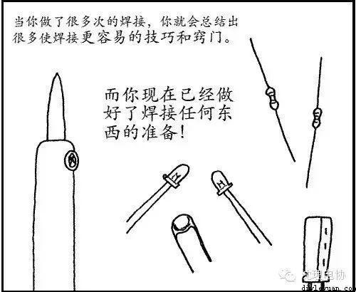
当你做了很多次的焊接，你就会总结出很多使焊接更容易的技巧和窍门。
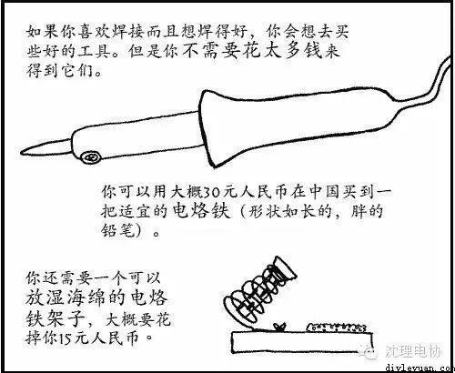
你可以用大概30元人民币在中国买到一把适宜的电烙铁
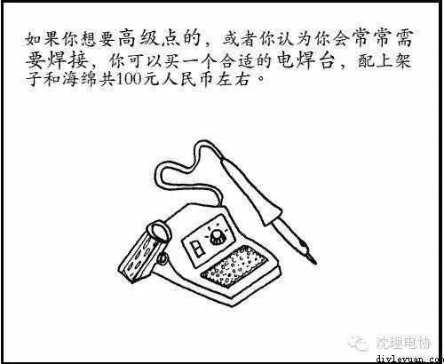
你可以买一个合适的电焊台
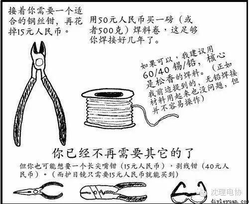
接着你需要一个适合的钢丝钳
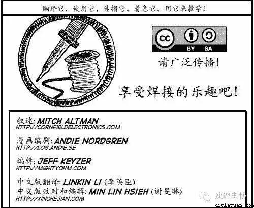
享受焊接的乐趣吧！